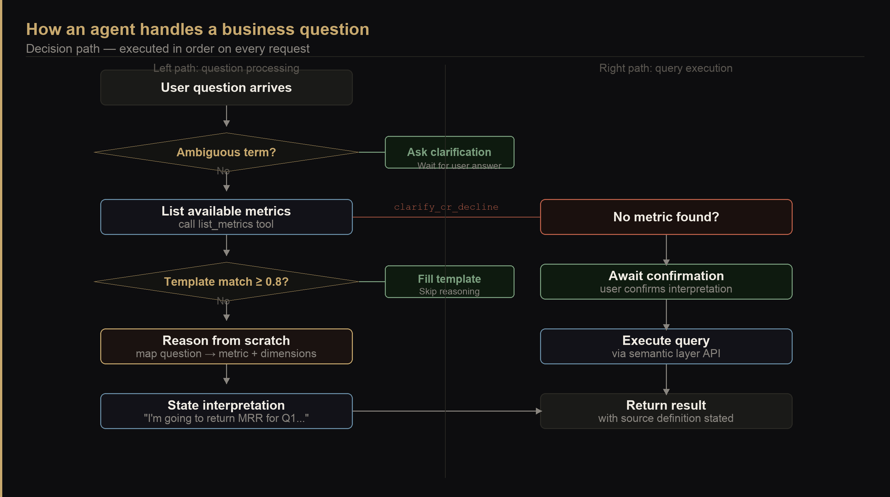
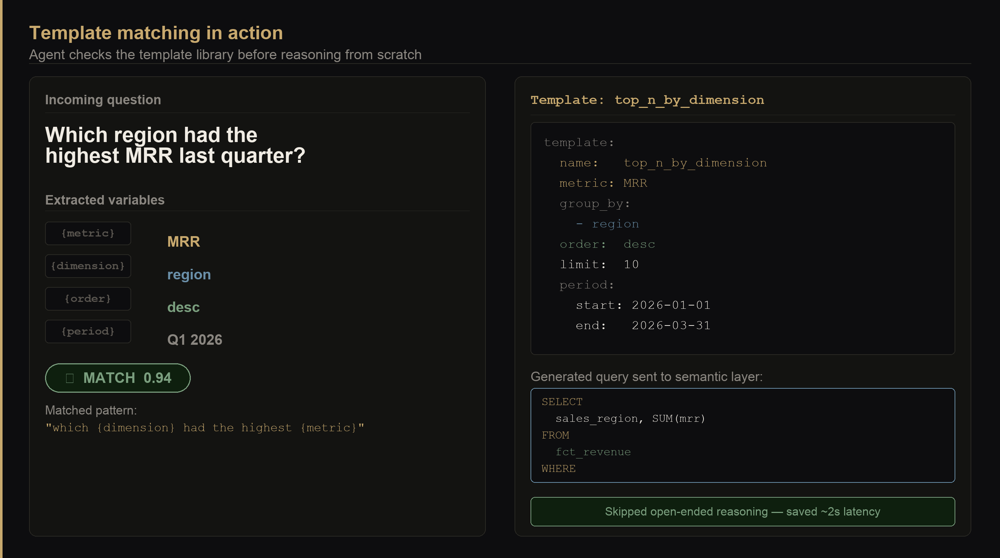
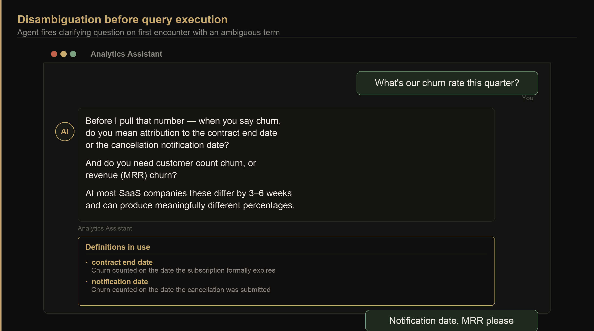

This is Part 0 of Agents on your semantic layer: Part 0: why they fail (this post) · Part 1: build the foundation · Part 2: harden it
Companion code: github.com/PZawieja/semantic-layer-agent
The VP of Sales asks your analytics agent "what's our churn rate this quarter?" The agent pauses two seconds. Returns a number. No hedging, no caveats. Looks great.
The number is wrong. It used contract end date attribution. Your VP meant notification date — the moment customers submitted their cancellation request, which at your company runs 3–4 weeks earlier than the formal contract end. Depending on your cancellation window, the two figures can differ substantially. That number goes into the board deck.
This is the canonical semantic layer agent failure. Not a crash. Not an error message. A confident, plausible, wrong answer.
What a semantic layer agent actually is
A semantic layer agent is an LLM — Claude, GPT-4o, Gemini, whatever — that has been given tools to query a semantic layer instead of writing raw SQL directly against your tables.
The semantic layer (dbt Semantic Layer, Cube, Looker's LookML engine, AtScale) is the part that knows your business logic: what counts as "active customer", how MRR is calculated, which tables to join to get revenue by region. The agent's job is to translate a business question into a semantic layer query, get the result, and explain it in plain English.
Think of it like ordering at a restaurant versus cooking yourself. A raw SQL agent walks into the kitchen and improvises with whatever it finds — it has to figure out which ingredients go together, how to combine them, and what "done" looks like. A semantic layer agent orders from the menu. The chef (the semantic layer engine) knows exactly how to prepare each dish, joins and all. The agent doesn't need to know how the kitchen works. It just needs to order correctly.
The problem: ordering correctly requires understanding the menu. And most agents skip that step.
Why the semantic layer makes agents smarter — and why it's not enough
Without a semantic layer, a SQL agent needs to:
- Know your schema (dozens to hundreds of tables)
- Know which tables to join and on what key
- Know which columns mean what in your business context
- Guess at business logic ("what counts as active?")
With a semantic layer, most of this is pre-solved. The agent maps a business question to a named metric — monthly_recurring_revenue with dimension region — and the semantic layer engine handles the SQL. The business logic is defined once, centrally, and the agent uses it rather than reinventing it every time.
This is the part the demos skip. They show a clean metric catalog, an agent that maps questions perfectly, and a correct number in under 3 seconds. What they don't show is "churn" defined three different ways across Finance, RevOps, and Sales in the same organization. Or an agent that maps "active customers" to the wrong dimension grain and nobody notices for a month.
The semantic layer solves the technical problem — which tables to join and how. It does not solve the semantic problem — what do we actually mean when we say "churn"? That's a people problem. The agent inherits it.
The three failure modes
1. Hallucinated metric names
The agent invents a metric name that doesn't exist in the semantic layer. The API returns an error, the agent retries, and sometimes it lands on a similar-sounding metric that means something different. net_revenue_retention vs net_revenue_retained vs nrr might look equivalent to the LLM, but only one of them exists in your catalog — and the others might not exist at all, or might exist but calculate differently.
Fix: give the agent a list_metrics tool and make it the first call at the start of every session. The agent should always know what's available before trying to query anything. Don't let it guess at metric names from memory.
2. Wrong dimension grain
The agent picks the right metric but the wrong dimension. "Revenue by customer" and "revenue by account" look identical to an LLM but return different numbers if your semantic layer has customer_id (individual contact) and account_id (company) as separate dimensions. This failure is particularly insidious because the query succeeds — no error, just a number at the wrong grain.
Fix: embed disambiguation notes directly in your dimension descriptions in the semantic layer. One sentence per dimension where ambiguity exists: customer_id: the individual contact person, NOT the company/account entity. These descriptions go into the tool definition the agent sees. Treat them as documentation for the LLM, not for humans.
3. Silent wrong answers
The most dangerous failure. The agent finds a metric, picks a plausible dimension, gets a number back, and presents it confidently. No error. The number is wrong because of a wrong filter, wrong time grain, or wrong interpretation of the original question. You only find out when someone questions it — sometimes weeks later in a stakeholder review.
Fix: require the agent to state its interpretation before running the query. "I'm going to return MRR for Q1 2026, filtered to active subscriptions, grouped by sales region. Is that right?" Force confirmation before execution on anything that might go into a report or a presentation.

Templates: when to use them and how
Templates are pre-built query patterns for your most common question types. Instead of asking the agent to reason from scratch every time, you give it a lookup table of recognized patterns and let it fill in the variable parts.
Think of templates like tax forms. You don't invent a new format every time someone needs to file — you use a standard form and fill in the specific figures. Templates work the same way for analytics questions. The reasoning has already been done; the agent just needs to identify the pattern and slot in the values.
Good candidates for templates:
templates:
- name: period_metric
pattern: "what was {metric} last {period}"
query:
metric: "{metric}"
grain: "{grain}"
filters:
- field: date
operator: between
value: "{period_start} and {period_end}"
- name: top_n_by_dimension
pattern: "which {dimension} had the highest {metric}"
query:
metric: "{metric}"
group_by: ["{dimension}"]
order: desc
limit: 10
- name: yoy_comparison
pattern: "how does {metric} compare to the same period last year"
query:
metric: "{metric}"
compare_to: previous_year
grain: "{grain}"
The agent checks the question against the template library first. Match found → extract variables, fill the template, execute. No match → reason from scratch.
Start with 5–10 templates for your most common questions before building anything else. In most B2B SaaS orgs, 80% of analytics questions fall into fewer than a dozen patterns: "what was X last period", "which Y had the highest X", "how does X trend over Z months".
Template matching is fuzzy — the agent may force a question into the wrong template. Set a confidence threshold: if the match is below ~0.8, fall through to full reasoning. A wrong template applied confidently produces the same outcome as hallucination.
When not to use templates: novel questions that combine metrics in non-standard ways, or questions that require business context you haven't encoded yet. Don't force a template match when the question doesn't actually fit.

Make the agent say "I don't know"
This is the hardest behavior to get right and the most important. LLMs are trained to be helpful, which means they will try to answer even when they shouldn't. You have to actively design against that default.
Think of it like a new analyst on their first week. A great one says "I'm not sure I have enough context — can you tell me which churn definition to use?" A bad one makes their best guess and submits the number. The second type is the one that gets you burned in a board meeting. Your agent defaults to being the second type unless you specifically build in the first behavior.
Two approaches that work together:
Give it an explicit decline tool — not just instructions. Don't just tell the agent it's okay to say it doesn't know. Give it a clarify_or_decline function and describe in the system prompt when to use it. LLMs follow tool use more reliably than they follow natural-language guidance when the internal pressure to be helpful is high.
tools = [
{
"name": "clarify_or_decline",
"description": (
"Use this when you cannot map the user's question to a metric with "
"high confidence, or when the question contains an ambiguous term. "
"Return what information you'd need to answer correctly. "
"Using this tool is the correct response — do not guess."
),
"input_schema": {
"type": "object",
"properties": {
"reason": {"type": "string"},
"clarifying_question": {"type": "string"}
},
"required": ["reason"]
}
}
]
Include an explicit instruction in the system prompt: "If you are not confident about which metric best maps to the user's question, use clarify_or_decline. Guessing is not acceptable — a wrong number presented confidently does more damage than a polite request for clarification."
The common objection: users will be frustrated if the agent doesn't answer. My counter: users are more frustrated when they find out the number was wrong in a board presentation, or when they've been making decisions based on the wrong churn figure for three months. An honest "I need a bit more context here" builds more trust than a confident wrong answer.
Clarifying questions: the churn example
Most agent implementations skip this step entirely, and it causes more damage than any technical failure.
When a user asks "what's our churn rate?", they might mean any of these:
Each produces a different number. Notification date vs. contract end alone can shift the figure substantially depending on how long your cancellation notice period runs — and that's before you factor in whether you're measuring customers or revenue.
The setup that catches this is a disambiguation library — a dictionary of known ambiguous terms with the clarifying question to ask before doing anything else.
DISAMBIGUATION = {
"churn": {
"clarifying_question": (
"Before I pull that number — when you say churn, do you mean "
"attribution to the contract end date or the cancellation notification date? "
"And do you need customer count churn or revenue (MRR) churn?"
),
"definitions": {
"contract_end": "Churn counted on the date the subscription formally expires",
"notification": "Churn counted on the date the cancellation was submitted",
}
},
"revenue": {
"clarifying_question": "Do you need MRR, ARR, or total recognized revenue?",
"definitions": {
"MRR": "Monthly Recurring Revenue — subscription value normalized to one month",
"ARR": "Annual Recurring Revenue — MRR × 12",
"recognized": "Revenue recognized under accounting rules, may differ from billed",
}
},
"active customer": {
"clarifying_question": (
"How do you define active? By subscription status, last login date, "
"or last payment date? Our semantic layer has all three as separate filters."
)
}
}
The agent checks the user's question against DISAMBIGUATION before doing anything else. If it finds a match, it asks the clarifying question first. The user's answer gets stored for the session and — if you build user-level memory — carried forward to future sessions.

Learning from past conversations
Most implementations don't do this, and it shows. The agent asks the same clarifying question every session. Users get frustrated. They start answering "contract end, MRR, like I always say" and eventually stop using the agent.
Think of it like a doctor who asks your date of birth at every appointment even though it's in your chart. Once is necessary. Twice is a policy. Every time is a sign that nobody connected the intake form to the patient record. Your agent has the same problem — and it has the same fix.
There are three levels of memory worth building, in order of impact:
Level 1 — Session memory: store disambiguation answers within the current session. If the user clarified "I always mean notification date for churn", apply that for every subsequent question this session. This is free with any LLM framework — just append answers to the context window.
Level 2 — User preferences: store disambiguation answers per user_id. Next time the same user asks about churn, skip the clarification and apply their saved preference. A simple key-value store — even a JSON file per user — is enough infrastructure to start.
Level 3 — Org definitions: canonical definitions your company has agreed on. This is the one most worth building and the one most teams skip entirely.
ORG_DEFINITIONS = """
[YourCompany] agreed metric definitions — apply these unless the user explicitly overrides:
churn: notification_date attribution, MRR basis, 30-day rolling window
active_customer: subscription_status = 'active' AND last_payment_date within 90 days
MRR: sum(current_monthly_value) for active customers, trials excluded
NRR: (starting_MRR + expansion - contraction - churn) / starting_MRR
"""
Inject this into the system prompt on every call. The agent no longer needs to ask about churn at all if your org definition is unambiguous. It states the definition it's using ("Using our standard definition: notification date, MRR basis...") so users can override if needed — but most of the time they won't need to.
Org definitions are not a technical artifact — they're a business decision. Getting alignment on "what does churn mean at our company" is harder than building the memory system. Block time with Finance and RevOps before you write any code. The agent setup is a week of work. The alignment can take months.
The setup that actually works
Put it all together and this is the architecture that avoids most production failures:
Agent request handling, in order
The full stack:
- Metric catalog tool —
list_metricscalled at session start; agent always knows what exists - Disambiguation library — checked before every query; fires clarifying questions for known ambiguous terms
- Org definitions in the system prompt — agreed definitions injected as static context; removes the need to ask for common terms
- Template library — pre-built patterns for common question types, checked before full reasoning
- Interpretation confirmation — agent states what it's going to query before executing, every time
clarify_or_declinetool — explicitly listed as a tool, explicitly encouraged in the system prompt- User memory — stored disambiguation preferences per user, injected at session start alongside org definitions
None of this is technically hard. The code for all seven of these is a few hundred lines. The hard part is the organizational work: agreeing on definitions, cataloging your most common questions, deciding what "churn" means at your company once and writing it down.
The agent is the easy part.
What's the most ambiguous metric at your company — the one where two people in the same meeting are looking at different numbers without realizing it?
Ready to build it? Part 1: the foundation walks through every line of code — three tools, one loop, about 80 lines. Part 2: hardening it adds the disambiguation pre-flight, template library, and three-tier memory described above.
Takeaways
- The semantic layer solves joins, not ambiguity — it handles which tables to combine and how, but it cannot resolve the fact that "churn" means three different things across your Finance, RevOps, and Sales teams.
- Silent wrong answers are the biggest risk — a confident wrong number is worse than an error message, because there's nothing to investigate until someone already acted on it.
- Give the agent a decline tool, not just instructions — LLMs follow tool definitions more reliably than natural-language guidance when the pressure to be helpful overrides caution.
- Templates cover 80% of business questions — most orgs have fewer than 12 question patterns. Build templates for those before investing in more sophisticated reasoning.
- A disambiguation library is cheaper than wrong answers — maintaining a dictionary of ambiguous terms with clarifying questions takes an afternoon. Fixing downstream decisions made on wrong churn figures takes much longer.
- Org definitions beat per-user memory — getting your company to agree on what "churn" means once is more valuable than building a sophisticated user-preference system. Start with the alignment, not the code.
- State the interpretation before executing — require the agent to say what it's about to query and get confirmation. This single pattern catches more errors than any other safeguard.